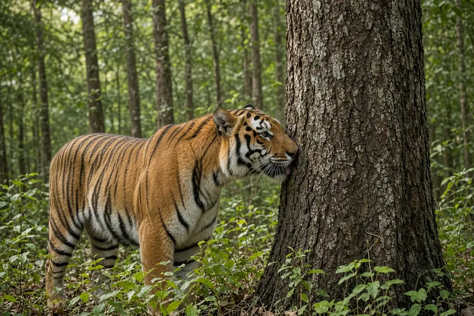

Home › Blog › How Do Tigers Mark Their Territory?
How Do Tigers Mark Their Territory?
Tigers mark territory mainly with scent: they spray urine mixed with a musky secretion on trees, rocks and grass, rake the ground in scrapes, and call to neighbours. Other tigers read these signs, which helps solitary animals share a landscape without meeting.

Why a solitary tiger needs messages
Tigers generally spend much of their lives apart from other adult tigers. That does not mean they live in a silent landscape. A tiger moving through forest, grassland or a river corridor encounters signs that other individuals have been there. Leaving and reading these signs helps animals navigate a shared landscape without needing to meet at every boundary. Territory is not a fence with a perfectly fixed edge. It is an area an animal uses and, to varying degrees, defends against competitors. The size and overlap of tiger ranges depend on prey, habitat, sex and the presence of other tigers. A scent mark offers information that can remain after its maker has walked away. That is particularly valuable to an animal whose neighbours may be difficult to see in dense cover. The University of Michigan Animal Diversity Web tiger account describes scent, visual signals and vocalisations as important parts of tiger communication.
Urine spray is a chemical signpost
One conspicuous marking behaviour is spraying a mixture of urine and scent-bearing material onto objects such as trees, grasses or rocks. These vertical surfaces can hold a noticeable chemical message at a place another tiger is likely to investigate. Rather than thinking of the message as a sentence translated into human words, it is better to understand it as a collection of cues. A receiving tiger may be able to gather information about the identity or reproductive condition of the animal that left the mark, although what each specific marking communicates is not always known. A scent mark does not physically exclude another tiger. Nor does a single spray establish ownership forever. Marks need to be considered alongside the animal's movements, encounters and other signals. Researchers therefore look for repeated marking patterns instead of treating an isolated damp patch as definitive proof of a territorial border.
Ground scrapes and tree scratches
Tigers also leave signs visible without any chemical analysis. The Animal Diversity Web account lists scrapes made by raking the ground among tiger visual signals, alongside sprayed spots. Scratches on trees are also widely reported by field observers. These features are useful evidence for field researchers, but an observer must be careful: different animals can disturb soil or mark bark, and weather can alter the appearance of a sign. A genuine scrape may also carry scent that a photograph cannot reveal. The context matters. Tracks near a suspected scrape, the height of scratches, habitat and camera-trap records can help determine whether a tiger made it. Even then, one observation rarely explains precisely why the tiger acted. The best interpretation comes from several independent clues collected without disturbing the animal.
What is the flehmen response?
A tiger investigating a smell may curl its upper lip, wrinkle its nose and briefly hold an unusual facial expression. This is called the flehmen response. It is associated with investigating chemical information, particularly marks linked with other tigers. Animal Diversity Web notes that flehmen is often associated with scent detection and is commonly seen in males that have just sniffed urine, scent marks or an oestrous tigress. Flehmen can look like a snarl in a still image, but those behaviours should not be assumed to mean the same thing. A flehmen posture is about processing a scent, not necessarily threatening an opponent. Tiger observers need to interpret the entire scene: Was the animal sniffing an object immediately before the expression? Was another tiger nearby? Was its body tense or relaxed? A single photograph can reveal an intriguing behaviour without proving the emotional state of the animal.
Calls and body language complement scent
Chemical communication is only one channel. Tigers also growl, roar, grunt, moan and make other vocal sounds. Calls may reveal that another tiger is nearby even when thick vegetation blocks a direct view. Visual postures and facial expressions can convey information during closer encounters. The account from Animal Diversity Web describes these sound and visual signals, while caution is needed when assigning one fixed meaning to every noise. Context changes interpretation. A roar during an interaction is not a simple substitute for a urine mark left hours earlier. One reaches listeners immediately; the other can persist in the environment. Together they provide different kinds of information across different distances and times. The resulting communication system suits a large predator that may need to monitor neighbours while hunting alone.
Why marking matters to conservation
Signs left by tigers can help researchers locate areas of use and choose places for camera traps. They are not, by themselves, reliable population counts: one animal can mark repeatedly, and another may leave fewer readily detected signs. Photographs, tracks, genetics and systematic surveys provide stronger evidence when combined with careful field methods. Protecting habitat also protects the routes along which tigers travel and communicate. A movement corridor is useful not because it contains a particular scratched tree, but because animals can move between areas in which they find prey and potential mates. For visitors, the correct response to a tiger sign is to keep a respectful distance and follow local wildlife rules. Do not approach a mark hoping to see its owner. Large cats are dangerous wild animals, and human interference can change the very behaviour people are trying to understand.
Frequently asked questions
Do tigers mark with urine?
Yes. They spray scent-bearing urine on objects in their environment.
Do scratches prove a tiger is nearby right now?
No. A mark can remain after the tiger has gone, and identification should be corroborated.
Is a tiger showing its teeth always angry?
No. The flehmen response can expose teeth while the animal investigates scent.
Do female tigers mark too?
Marking is not restricted to males, although patterns vary with circumstance.
Can researchers count tigers simply by counting marks?
No. One tiger may produce many marks, so population estimates require additional methods.
Cite this page
APA: BigCatWise. (2026, November 16). How Do Tigers Mark Their Territory?. https://bigcatwise.com/blog/how-do-tigers-mark-their-territory.html
MLA: "How Do Tigers Mark Their Territory?." BigCatWise, 16 Nov. 2026, bigcatwise.com/blog/how-do-tigers-mark-their-territory.html.
Chicago: BigCatWise. "How Do Tigers Mark Their Territory?." Last modified November 16, 2026. https://bigcatwise.com/blog/how-do-tigers-mark-their-territory.html.
Please check the date you accessed the page and adjust to your teacher's or journal's style guide.